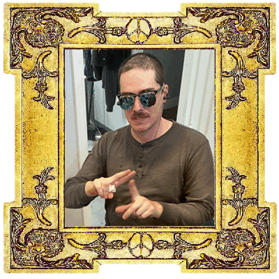
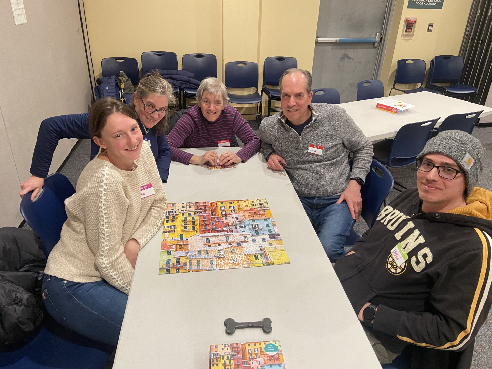

National Amateur Puzzle Champion of Burlington, MA
Congrats!!! Congrats!!!Congrats!!!Congrats!!!Congrats!!!Congrats!!!Congrats!!!Congrats!!!Congrats!!!Congrats!!!Congrats!!!Congrats!!!Congrats!!!Congrats!!!In the serene town of Burlington, where the mist hung low over the tranquil streets and the old Victorian houses whispered tales of bygone eras, there resided the Drew family, renowned for their unwavering love for puzzles. Eleanor and Thomas Drew, along with their son Drew, were the puzzle-solving prodigies of Burlington, their passion for unraveling enigmatic mysteries a source of fascination for all who knew them. One fateful evening, as the moon cast an eerie glow over the cobblestone streets, an enigmatic invitation bearing the emblem of the Puzzle Master arrived at the Drew family's doorstep. It beckoned them to participate in the annual Puzzle Competition, a clandestine event steeped in secrecy and allure. Intrigued by the challenge and eager to put their skills to the test, the Drews accepted the invitation without hesitation. The night of the competition arrived, shrouded in an aura of anticipation and intrigue. The Drew family found themselves at a grand mansion on the outskirts of Burlington, surrounded by a diverse array of competitors from all walks of life, each harboring their own secrets and ambitions. As the competition unfolded, the challenges grew increasingly complex and perilous. Riddles whispered on the wind, puzzles that seemed to defy logic, and traps lurking in the shadows tested the mettle of the contestants. Yet, the Drew family remained steadfast, their collective intellect and unyielding determination serving as their most potent assets.
 
Visits:
0
Click here for more!